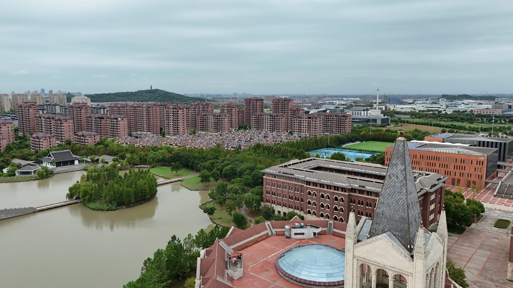
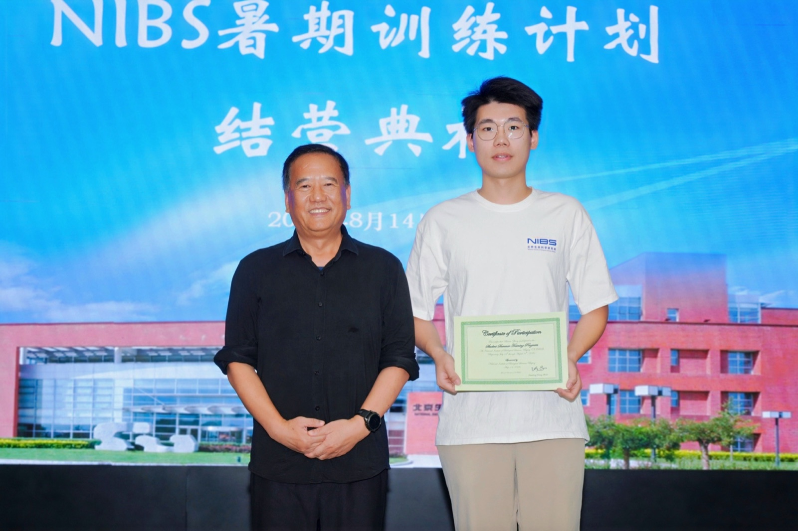

Hi, I'm
A junior undergraduate in Bioinformatics.
📍 Zhejiang University - University of Edinburgh Institute (ZJE) · Bioinformatics

I'm Bowen Zheng, a junior undergraduate in Bioinformatics at the Zhejiang University - University of Edinburgh Institute (ZJE). I have maintained strong academic performance and was awarded the Zhejiang Provincial Government Scholarship. Since my freshman year, I've been conducting research in Dr. Wanlu Liu's lab at ZJE. In the summer of my sophomore year, I completed an internship at the National Institute of Biological Sciences (NIBS) in Beijing, working under Dr. Bin Li at the Bioinformatics Center. Looking ahead, I aspire to deepen my work in AI for Science — leveraging new technologies to advance the intersection of computational science and biomedicine.
Beyond academics, I find joy in photography, reading, and music. I claim no mastery in any, yet each offers its own rhythm: the shutter freezing fleeting moments, the pages holding boundless thoughts, the melodies quieting the rush of daily life. In these passions, I settle into myself and catch glimpses of what truly matters.
Immune mechanisms of inflammatory bowel disease susceptibility in patients with autoimmune disease

Moments made eternal.
A slower way to remember. Click a canister to unroll.